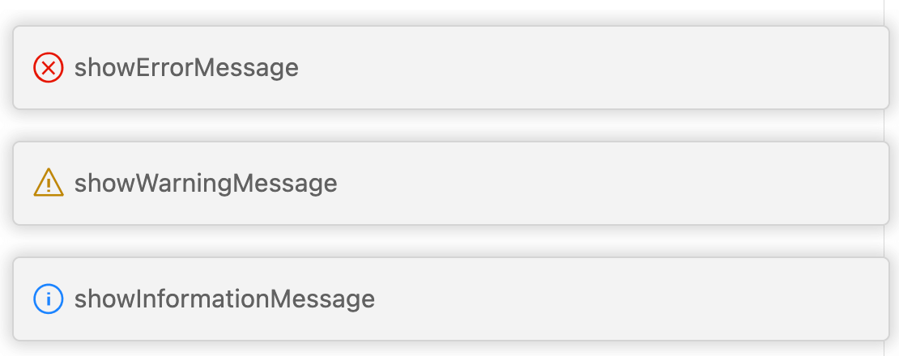

3.3 通知和状态栏
程序开发中和显示通知信息时可以通过通知消息框或状态栏显示。本节展示通知和状态栏的基本用法。
3.3.1 通知消息
VS Code提供了普通信息、警告信息、错误信息三种通知消息显示框，对应以下几个函数：
namespace windows {
function showInformationMessage(message: string);
function showWarningMessage(message: string);
function showErrorMessage(message: string);
}
他们的显示效果如图：

三种类型消息函数的API几乎是一样，主要是图标的区别。
3.3.2 消息框的返回值
除了基本用法，这些函数还支持定制可选的值并返回值。重载函数的签名如下：
function showInformationMessage(
message: string, ...items: string[]
): Thenable<string | undefined>;
可以通过返回值判断不同的字符串输入，下面是从“KCL”、“凹语言”、“CodeBlitz”三个中选择一个打开：
/** @param {vscode.ExtensionContext} context */
function activate(context) {
context.subscriptions.push(vscode.commands.registerCommand('extdev.openPage', () => {
vscode.window.showInformationMessage(
'请选择要打开的网页',
"KCL", "凹语言", "CodeBlitz"
).then(result => {
if(result === 'KCL') {
child_process.exec(`open 'https://kcl-lang.io'`);
} else if (result == '凹语言') {
child_process.exec(`open 'https://wa-lang.org'`);
}else {
child_process.exec(`open 'https://codeblitz.cloud.alipay.com/zh'`);
}
});
}));
}
获取返回值后通过Node.js的child_process.exec调用本地的open命令在浏览器打开网站。这个例子只能在Linux或macOS本地环境使用。下面是显示效果：

3.3.3 消息框模态
除了指定可选择输入项，还可以设置窗口的显示模式，对应重载函数的签名如下：
export interface MessageOptions {
modal?: boolean;
detail?: string;
}
export interface MessageItem {
title: string;
isCloseAffordance?: boolean;
}
function showInformationMessage(
message: string, options: MessageOptions, ...items: MessageItem[]
): Thenable<MessageItem | undefined>;
MessageOptions可以设置模式窗口还是非模式，还有详细的说明信息。MessageItem则是每个选项的更信息。以下是演示代码：
/** @param {vscode.ExtensionContext} context */
function activate(context) {
context.subscriptions.push(vscode.commands.registerCommand('extdev.showMsgboxOpt', () => {
vscode.window.showInformationMessage(
'请选择要打开的网页', {'modal':true, 'detail': "更多信息"},
{"title":"Retry"}, {"title":"Open Log"}
).then(result => {
console.log(`result: ${result.title}`);
});
}));
}
显示效果如下：

3.3.4 设置状态栏
除了弹出提示框，状态栏也是一个比较灵活的显示窗口。比如默认的状态栏可以实时显示编辑的光标位置，文件编码、类别等信息。可以通过setStatusBarMessage函数实现：
namespace windows {
function setStatusBarMessage(text: string): Disposable;
function setStatusBarMessage(text: string, hideAfterTimeout: number): Disposable;
}
下面在命令执行的时候显示命令，3秒钟后隐藏：
/** @param {vscode.ExtensionContext} context */
function activate(context) {
context.subscriptions.push(vscode.commands.registerCommand('extdev.showMsgbox', () => {
vscode.window.setStatusBarMessage('cmd: extdev.showMsgbox', 3000);
...
}));
}
显示效果如下：

更为复杂的状态栏定制可以通过vscode.window.createStatusBarItem来完成，这里不再展开。
3.3.5 小结
消息框和状态栏是用户显示信息的常用手段，而且使用方式比较独立，可以把他们理解为传统编程语言中的print类似功能单带界面的函数。